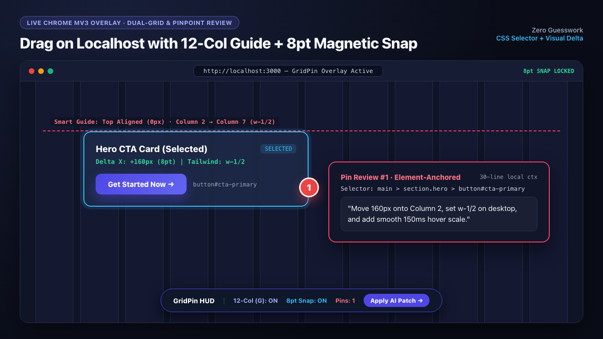
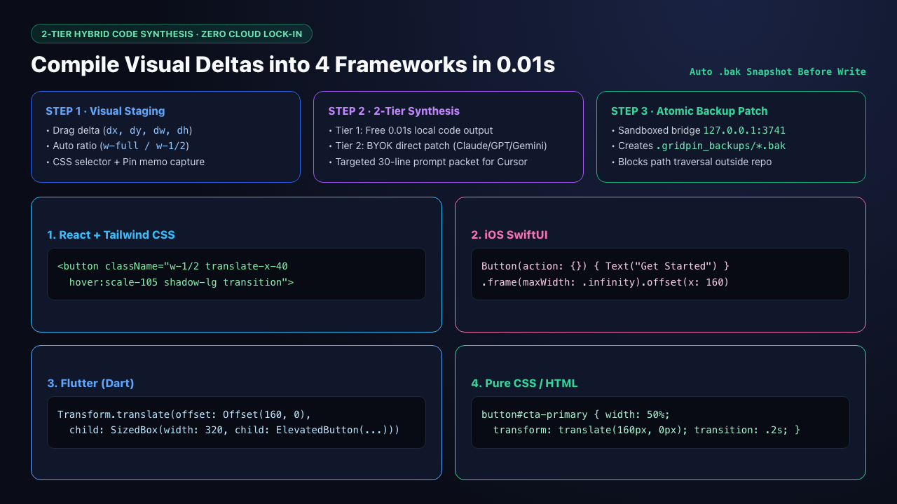

Stop Writing 5 AI Prompts Just to Shift a Button 20px. Drag, Pin, and Patch UI Locally in 0.01s.
What Is GridPin and Why Does Visual Dragging Beat Blind Chat Prompts?
GridPin is a Chrome Extension MV3 visual layout finisher paired with a sandboxed local Node.js bridge (127.0.0.1:3741) and VS Code extension built by DH Labs. Text-only AI coding tools such as Cursor, Claude Code, Bolt.new, and v0 cannot inspect the live rendered DOM box model, which causes 4 to 6 broken chat iterations per spacing tweak. GridPin injects a toggleable 12-column guide (G) and 8pt magnetic snap grid directly on localhost, computes w-full/w-1/2 responsive ratios, captures element-anchored numbered pins (C) with 30-line targeted file scopes, and synthesizes React + Tailwind, iOS SwiftUI, Flutter (Dart), or Pure CSS diffs in 0.01s while writing automatic .gridpin_backups/*.bak snapshots before any local disk write ($12/month Monthly Pass or $79 Lifetime up to 3 machines).
1. Why Text-Only Vibe Coding Loops Break Card Alignments
When an LLM reads raw JSX or CSS files without browser geometry coordinates, requesting a 20px nudge frequently shifts parent flex containers or breaks mobile breakpoints. Instead of repeating prompts, GridPin locks spatial intent directly in Chrome and hands your local codebase verified pixel deltas.
12-Column Guide + 8pt Magnetic Grid
Press G on any local dev URL and drag cards or buttons directly onto clean 8pt grid increments. GridPin infers column width classes such as w-1/2 automatically.
CAD-Style Numbered Pins (Key C)
Click any target component to lock Pin #1, #2, or #3 with a note, exact CSS selector, bounding rectangle deltas, and a compact 30-line surrounding code snippet.
4-Framework Diff + Auto .bak Safety
Tier 1 local synthesis produces clean React/Tailwind, SwiftUI, Flutter, and CSS in 0.01s with zero LLM spend. Or connect BYOK API keys for atomic diff commits with instant rollback.
2. Live Chrome Overlay & Multi-Framework Diff Architecture

Dual-Grid Dragging + Element-Anchored Pin #1
Captures exact selector path, +160px horizontal snap delta, and natural-language pin notes in one HUD bar.

0.01s Multi-Framework Synthesis + Auto .bak Rollback
Every local write through 127.0.0.1:3741 creates a timestamped .bak snapshot and rejects path traversal with HTTP 403.
3. How Does GridPin Compare to Chat Prompting and Hosted Builders?
| Workflow Dimension | Standard Chat Loop (Cursor / Chat) | GridPin v1.0 (Local Extension + Bridge) |
|---|---|---|
| Layout Coordinate Source | Blind text descriptions ("move button 20px right") | Live DOM drag delta snapped to 12-Col + 8pt grid |
| Patch Scope & Safety | Full-file rewrites risking sibling card regressions | 30-line targeted scope + auto .gridpin_backups/*.bak |
| API Cost Per Visual Tweak | Consumes chat tokens on every layout iteration | $0 Tier 1 deterministic 0.01s output (optional BYOK Tier 2) |
| Target Frameworks | Prompt-dependent single stack | React + Tailwind, iOS SwiftUI, Flutter Dart, Pure CSS |
| Machine Activation & Price | Monthly IDE quota burn | $12/mo Monthly Pass or $79 Lifetime (up to 3 dev machines) |
What Comes Inside the GridPin Commercial ZIP (43.4 KB)
- Chrome Extension MV3 (
extension/): Load unpacked in 60 seconds — zero remotely hosted code (RHC clean). - Sandboxed Local Bridge CLI (
cli/bridge-server.mjs): Binds strictly to127.0.0.1:3741, blocks../and secret file access with HTTP 403, and writes automatic.baksnapshots. - VS Code Workspace Extension (
vscode-extension/): Inspect staged visual prompts and apply targeted patches directly inside VS Code or Cursor. - Full Commercial Rights: 100% of generated React, SwiftUI, Flutter, and CSS code belongs strictly to you.
4. Frequently Asked Questions
How fast can I install GridPin after checkout?
Checkout unlocks an instant 43.4 KB ZIP download and your unique Gumroad license key. Unzip, enable Developer mode in chrome://extensions, click Load unpacked on the extension/ folder, and paste your key in the popup — total setup takes under 60 seconds.
Does GridPin require an external OpenAI or Anthropic subscription?
No. Tier 1 synthesis runs locally in 0.01 seconds with zero API fees and generates copy-ready code plus structured Cursor/Claude prompt packets. Tier 2 BYOK support is optional if you want direct file diffs via your own Anthropic, OpenAI, or Google Gemini key.
What is the difference between the $12/month pass and $79 lifetime license?
Both plans unlock the complete Chrome Extension MV3 overlay, 4-framework synthesizer, Local Bridge CLI, and VS Code extension across up to 3 developer machines. Choose $12/month for flexible short sprints or $79 once for perpetual offline/API-verified ownership.